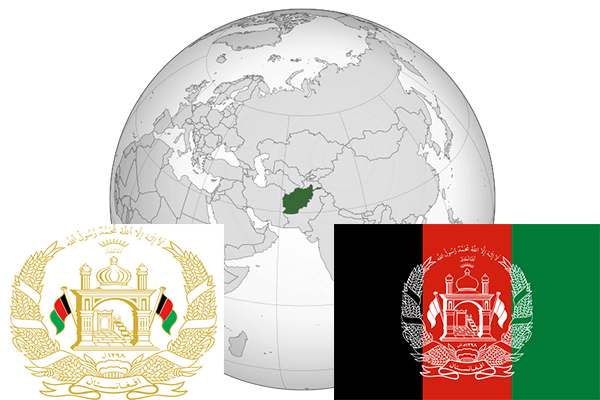

To`liq nomi: Afgʻoniston Islom Davlati
Region: Janubiy g'arbiy Osiyoning eng chekka sharqiy qismida joylashgan
Qonunchilik shakli: Islomiy Respublika
Mustaqillik kuni: Birinchi Afgʻon Davlati 1747-yil oktabrda,1919-yil 19-avgustda (Birlashgan Qirollikdan)
Poytaxti: Qobul
Maydoni: 652,864 km2 (dunyoda 41-o`rinda )
Chegaradosh davlatlari: Turkmaniston,O`zbekiston, Tojikiston, Xitoy, Hindiston, Pokiston, Eron
Aholisi: 32,390,000 (39-o`rin) (2011 roʻyxat)
Aholi zichligi: 43.5/km2
Aholining o`rtacha yoshi: 43,8yil (44,00 ayol, 43,6 erkak)
Rasmiy tili: Dari (Forscha), Pashtuncha
Dini: Islom
Pul birligi: afgʻoni;(AFN)
Telefon prefiksi: +93
Internet domen: .af
Xalqaro tashkilotlarga a`zoligi: 1946-yildan — BMT aʼzosi
YIM: Butun: $29,731 milliard, Jon boshiga: $956 (2011- yil roʻyxati)
Yirik shaharlari: Qobul, Qandahor, Hirot, Mozori-Sharif